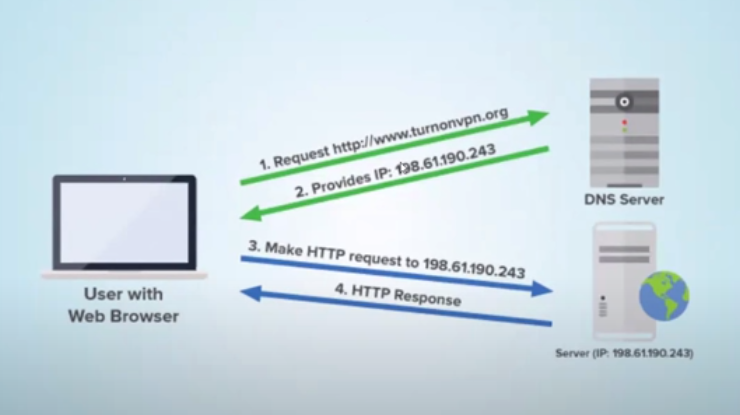
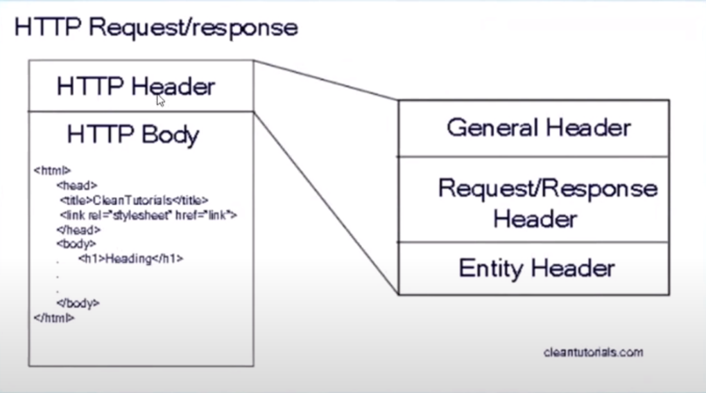

HTTP 前後端傳輸流程
紀錄前端與後端之間的基本傳輸原理
什麼是伺服器 ?
提供服務的電腦
ex: 網頁伺服器、檔案伺服器、郵件伺服器…
和一般電腦有什麼不一樣
- 一般家用電腦重顯示效果，遊戲電玩或 3D 繪圖都需要強大的顯示卡運算能力
- 伺服器重運算及資料安全，CPU 需要非常強大, RAM 插好插滿, 磁碟陣列保護資料, 24 小時不關機
網頁伺服器軟體
ex: Apache、Micorsoft IIS、NGINX…
建立網頁伺服器
安裝 node 後可以透過 express 來建立簡易網頁伺服器，首先檢查是否已安裝 node 並確認版本
1
node -v
安裝 express
1
npm i express-generator -g
接著可以在桌面新建立一個放置檔案的新資料夾 demo ，並進入到資料輸入以下指令來查找 express 指令
1
express -h
接著建立 ejs 樣板引擎
1
express -e
依照指示的步驟執行
1
2npm i
npm start最後在 http://localhost:3000 開啟伺服器網頁
網址是如何產生畫面的 ?
因為 HTTP 通訊協定，通訊協定就好比人溝通的語言
什麼是 HTTPS ?
- http 是沒有加密的，只要攔截到封包就可以看到傳送的內容，來路不明的 wifi 就有可能藉此攔截訊息
localhost 是什麼 ?
- 指向自己電腦的名稱，網址會先透過 DNS 伺服器將網址解析成 IP，但 localhost 預設指向 127.0.0.1 的 IP，網址是給人看並具有意義的，而電腦則是夠過 IP 來傳遞資料的

127.0.0.1
表示自己電腦的 IP 位置
IPv4 v.s IPv6
以往都是使用 IPv4 的規則來產生 IP，但隨著 IP 不斷增加，IPv4 開始遇到 IP 不夠用的問題，因此就出現了 IPv6 來解決 IP 不夠用的問題
- IPv4 : 0.0.0.0 ~ 255.255.255.255 共有 2**32 組
- IPv6 : 0000:0000:0000:0000:0000:0000:0000:0000 ~ FFFF:FFFF:FFFF:FFFF:FFFF:FFFF:FFFF:FFFF 共有 2n**128n 組 (n 可以突破 javascipt 位數限制)
通訊阜號
- http 預設是 80, https 預設是 443, 預設的 port 可以不加, 每個 port 只能給一支應用程式監聽, 另外 FTP 檔案傳輸協定是 21, SMTP 簡單郵件傳輸協定為 25
怎麼查 PORT 被誰使用 ?
- 透過以下指令可以查詢現在正被使用的 port
1 | netstat -ano | findstr LISTENING |
- 接著可以查詢指定的 port
1 | tasklist | findstr {{port}} |
何謂 TCP/IP ?
- TCP : 如同寄送大型包裹時，會拆分成許多小件以方便寄送，TCP 會將傳輸物件拆分成許多封包來運送
- IP : 可以則如同寄送包裹的地址，唯有標註 IP 才會知道要傳輸的位置
產生 Request 封包
- 瀏覽器 (client) 產生 Request 封包傳送給伺服器 (server), 等待伺服器回傳 response 封包解讀裡面的內容
Method 請求方法
- Get : 如同寄信片，大小限制約 2 KB，
- Post : 如同將大物件拆分成許多包裹來寄送，傳輸內容沒有上限
常見的 Request Header
Host
- 瀏覽器存取的 Host 名稱，因為一個 IP 可以綁定多個 Domain ，此時就須要 Host 知道要對應哪一個伺服器
User-Agent
- 瀏覽器名稱和版本 & 作業系統名稱和版本 (讓伺服器知道)
Accept
- 瀏覽器接受的類型 ex: text/plain、text/html
Accept-Language
- 瀏覽器接受的語言，q 值表示語言優先的權重 ex:zh-TW,zh;q=0.9,en-US;q=0.8,en;q=0.7
Accept-Encoding
- 瀏覽器支援的壓縮格式，大部分瀏覽器都支援 gzip 壓縮，伺服器則會壓縮內容後傳給瀏覽器，節省下載時間和頻寬
Date
- 傳送瀏覽器時間給伺服器，讓伺服器知道瀏覽器目前的時間
Expect
- 要求伺服器回應特定的結果，期望可以給想要的結果，但最終結果還是由伺服器決定 ex: 100-continue
If-Modified-Since
- 瀏覽器 cache 檔案，下一次 request 則會發送此 header，伺服器使用這個時間來判斷是否修改過檔案，沒有則回傳
- If-Modified-Since (時間)
- If-None-Match (Hash Code)
Cookie
- 把瀏覽器的 cookie 傳給伺服器，”每一個” request 都會包含 cookie，所以盡可能減少 cookie 的使用，避免過度增加傳輸頻寬
Referer
- 瀏覽器前一個瀏覽頁面的網址，可用此 header 判斷 request 的來源，但是不可靠，因為可能遭到串改 (原應為 referrer 因為拼錯了只好將錯就錯)
Connection
- 可以設定 Keep-Alive 保持連線時間，減少重新連接 TCP 連線次數，提高傳輸效率
Content-type
- 指傳送內容的格式，常見格式為 :
- application/x-www-form-urlencoded
- multipart/form-data;boundary=–xxx
- text/plain
Authorizationpn
- HTTP 連線的身分驗證
Upgrade
- 升級到另外一個協定 ex: websocket
伺服器回應什麼 ?

Header 一定放在內容前面，傳送除了內容以外的資訊
- 內容格式 (圖檔、文字檔、HTML、JSON)
- 內容大小 (KB…)
- 內容多久後過期
- 內容從哪來等…
內容不一定是 HTML，但 HTML 一定是內容之一 (內容還包括圖片、字型、CSS、Javascript、JSON…)
狀態碼
1XX: 訊息類 (收到請求，請求者既徐執行操作)
- 100 continue : server 期待收到更多訊息，以進行完整處理，多半是 Request 的 header 有待 Expect 要求回應 100
- 101 Switching Protocols : 用在 websocket 初始化，進行雙向資料傳輸
2XX: 成功類 (操作被成功接受並處理)
- 200 OK : 最常見的狀態碼，表示請求正常
3XX: 重定向類 (需進一步操最才能完成)
- 301 Moved Permanently : 永久移動到新的網址，同時需要有 Lfocation 的 header，SEO 會被更新
- 302 Found : 找到網址，同時需要有 Location 的 header，SEO 不會被更新
- 304 Not Modefied : 未修改，回應不包含 Content
- 307 Temporary Redirect : 暫時重新導向，與 302 類似，但 302 如果從 POST 進來會給從 GET 導向網址，307 則不會變更請求方法
- 308 Permanent Redirect : 永久重新導向，類似於 301，就好比 302 & 307 之間的關係，不會變更請求方法
4XX: 客戶端錯誤類 (請求語法錯誤或無法完成請求)
- 401 Unauthorized : 未驗證拒絕存取
- 403 Forbidden : 伺服器接受請求，但被拒絕處理
- 404 Not Found : 伺服器找不到要求的網頁
- 413 Request Entity Too Large : 通常是 GET 傳送超過 URL 上限大小，伺服器無法處理
5XX: 伺服器錯誤類 (後端問題)
- 500 Internal Server Error : 伺服器發生錯誤，通常是後端的問題
- 503 Service Unavailable : 伺服器維護或者過載，伺服器當前無法處理請求
常見的 Response Header
Etag
- 產生檔案的 Hash Code 給瀏覽器，下一次瀏覽器可以傳送 If-None-Match 給伺服器判斷是否有修改過檔案，沒有則回傳 304 且不會包含 Content
Lash-Modified
- 回傳檔案最後的修改時間，下一次瀏覽器可以傳送 If-Modified-Since 給伺服器判斷是否有修改過檔案，沒有則回傳 304 且不會包含 Content
Catch-Control
- 快取檔案的策略，max-afe 則表示該檔案有效的 cache 秒數，no-cache 則表示不使用 cache
HTTP 1.1 快取機制
Content-type
- 回傳 Content 的 mime 類型，當 content-type 設為 text/html 和 text/plain 可同時設定 charset 文字編碼格式，若無 content-type 瀏覽器自動判斷
Content-Disposition
- 瀏覽器可以打開下載視窗並且指定檔案名稱，Ex: Content-Disposition: attachment; filename=”download.zip”
Content-Length
- 取得傳送內容的大小，讓瀏覽器可以判斷下載的進度
Date
- 傳送伺服器時間給瀏覽器，讓瀏覽器知道伺服器目前的時間，可以藉此計算兩者之間的時差
Location
- 當狀態碼為 301 或 302 時，瀏覽器會重新導向到 Location 這個位置
Set-Cookie
- 設定瀏覽器 Cookie，當瀏覽器收到此 header 則會建立 cookie 在瀏覽器中
Content-Encoding
- 回傳內容的壓縮格式，讓瀏覽器知道該如何解壓縮內容
Access-Control-Allow-Origin
- 允許跨網域存取的 Domain，全部網域使用 * 字號表示，script 和 link 標籤不再此限
X-Frame-Options
- 是否能夠在 , 以及
Upgrade
- 確認升級到新的協定，此時 connection 也會同時回應 Upgrade ex: Connection: Upgrade; Upgrade: websocket